NHỮNG THAY ĐỔI TRÊN BẢN ECUS5VNACCS 2018
(Phiên bản update 22/11/2021)
Phần mềm ECUS5VNACCS2018 - Ngày phát hành 30/11/2021
Phiên bản cập nhật ngày 22/11/2021 được phát hành ngày 30/11/2021 bổ sung, sửa đổi các chức năng sau:
- 1. Yêu cầu cập nhật phiên bản cơ sở dữ liệu khi chạy phần mềm.
Khi chạy chương trình, nếu Phiên bản CSDL hiện tại và Phiên bản CSDL yêu cầu đang có sự chênh lệch nhau, phần mềm sẽ hiện ra thông báo như sau:
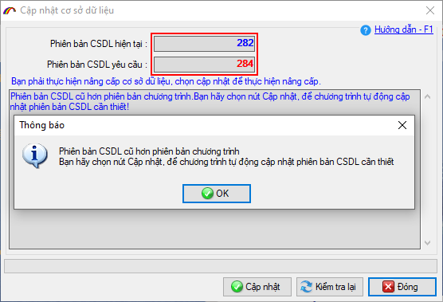
Tùy từng trường hợp cụ thể mà có các xử lý cho phép hoặc không cho phép đóng thông báo:
- Trường hợp 01: Nếu chênh nhau 1 đơn vị, thông báo trên cũng được hiển thị nhưng doanh nghiệp có thể đóng lại để tiếp tục sử dụng chương trình.
- Trường hợp 02: Nếu chênh nhau >1 đơn vị, phần mềm sẽ không cho phép đóng thông báo, bạn cần thực hiện cập nhật phiên bản cho chương trình.
- 2. Bổ sung chức năng cho phép doanh nghiệp đăng ký mua bản quyền, đăng ký gia hạn trực tuyến.
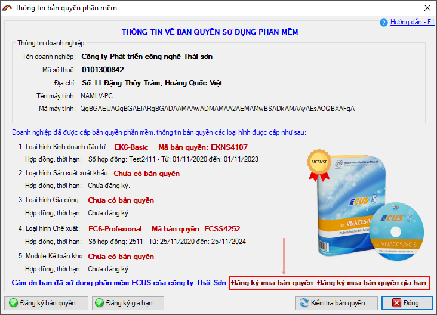
Doanh nghiệp hoàn toàn chủ động trong việc lựa chọn các loại hình đăng ký, thời hạn sử dụng, số lượng máy và khách hàng:
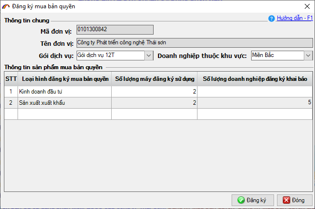
Thông tin đơn hàng cũng được phần mềm cập nhật trạng thái tiến trình xử lý để doanh nghiệp theo dõi:
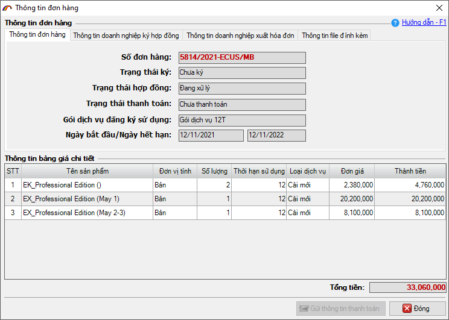
Thông tin thanh toán cũng được gửi thông qua chức năng này:
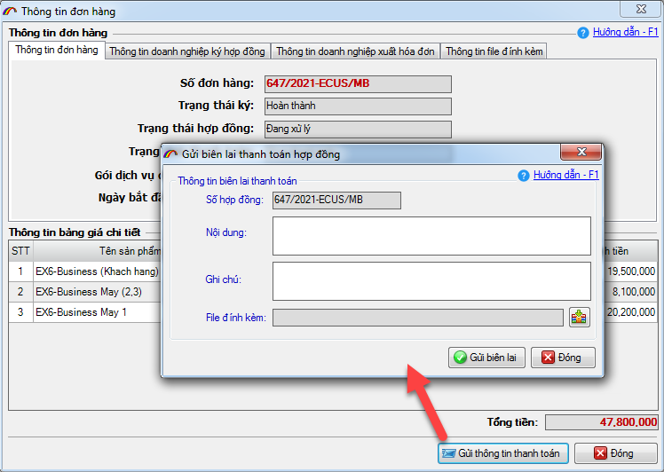
Vui lòng xem chi tiết hướng dẫn các đăng ký bản quyền trực tuyến, đăng ký gia hạn trực tuyến tại
HƯỚNG DẪN ĐĂNG KÝ.
- 3. Giới hạn thêm mới số lượng khách hàng với các phiên bản.
Phiên bản cập nhật mới chỉ cho phép doanh nghiệp thêm mới tối đa 05 khách hàng trên các phiên bản: Bản demo, Basic và Professional. Để thêm mới được nhiều khách hàng (hơn 05 khách hàng) doanh nghiệp đăng ký Phiên bản Business.
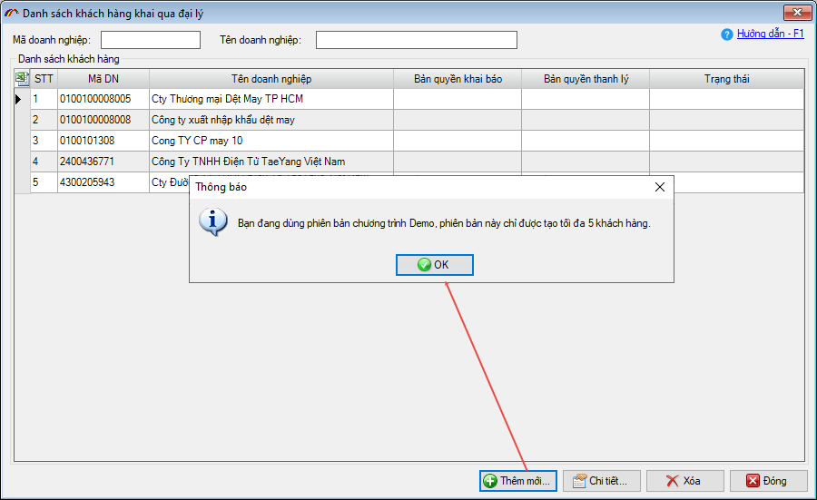
- 4. Quy định về bản quyền đối với phân hệ Kinh doanh.
Đối với Doanh nghiệp chỉ sử dụng loại hình kinh doanh, nếu hết hạn bản quyền:
- Khi khai báo IDA/EDA sẽ hiển thị form thông báo về bản quyền sử dụng đã hết hạn, cần được gia hạn hoặc mua mới.
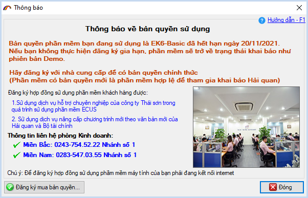
- Khởi động chương trình sẽ hiển thị form thông báo về bản quyền sử dụng.
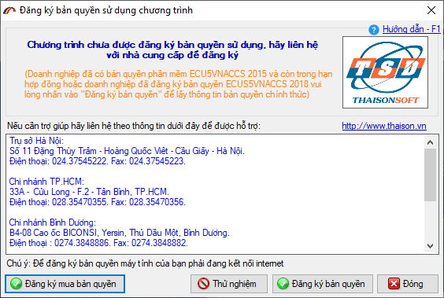
- 5. Đại lý khai báo cho khách hàng chưa có bản quyền.
Khách hàng được doanh nghiệp đại lý khai báo, nếu Khách hàng chưa có bản quyền, khi khai báo IDA/EDA phần mềm sẽ hiển thị form thông báo số lượng tờ khai được phép khai báo theo loại hình:
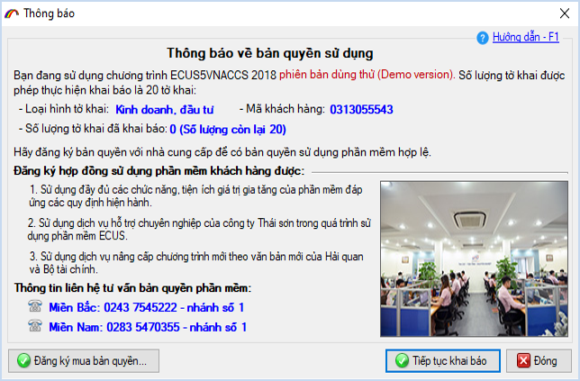
- 6. Bổ sung chức năng in tờ khai ra định dạng PDF
Doanh nghiệp có thêm lựa chọn in nhiều tờ khai ra định dạng pdf tại menu Tờ khai hải quan/ In tờ khai (in nhiều tờ khai):
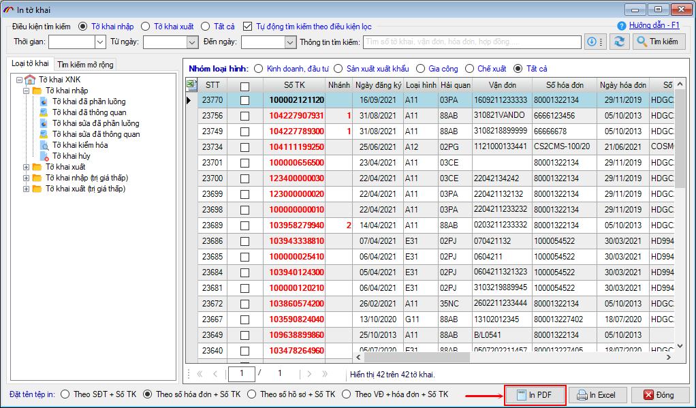
- 7. Sửa đổi bổ sung chức năng khai báo TIA
Chức năng khai báo TIA được sửa đổi, bổ sung thêm các mục sau:
- 1. Tại Tab Kết quả xử lý tờ khai sẽ hiển thị các thông điệp trả về
- 2. Gán thông điệp vào ID của tờ khai.
- 3. Nút Cập nhật thời hạn vào cho tờ khai tạm nhập tái xuất sáng lên khi trạng thái tờ TIA là D: Đã được tiếp nhận.
- 4. In tờ khai TIA bổ sung mã phân loại cấp phép.
- 5. Nghiệp vụ ITI bổ sung thêm chỉ tiêu Phân loại cấp phép với 1 trong các giá trị sau:
- R: Registration
- I: Instruction
- N: Inefficient
- 8. Bổ sung thêm cột Số hiệu và số bao bì, Chi tiết khai trị giá vào Báo cáo tờ khai xuất nhập khẩu.
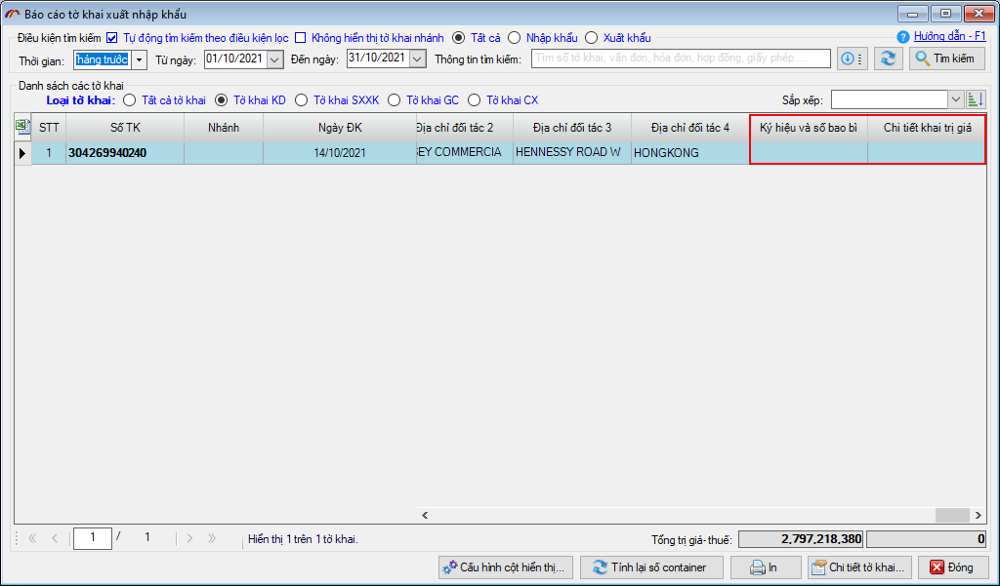
- 9. Bổ sung thêm cột Mã biểu thuế XNK vào Báo cáo chi tiết hàng hóa xuất nhập khẩu.
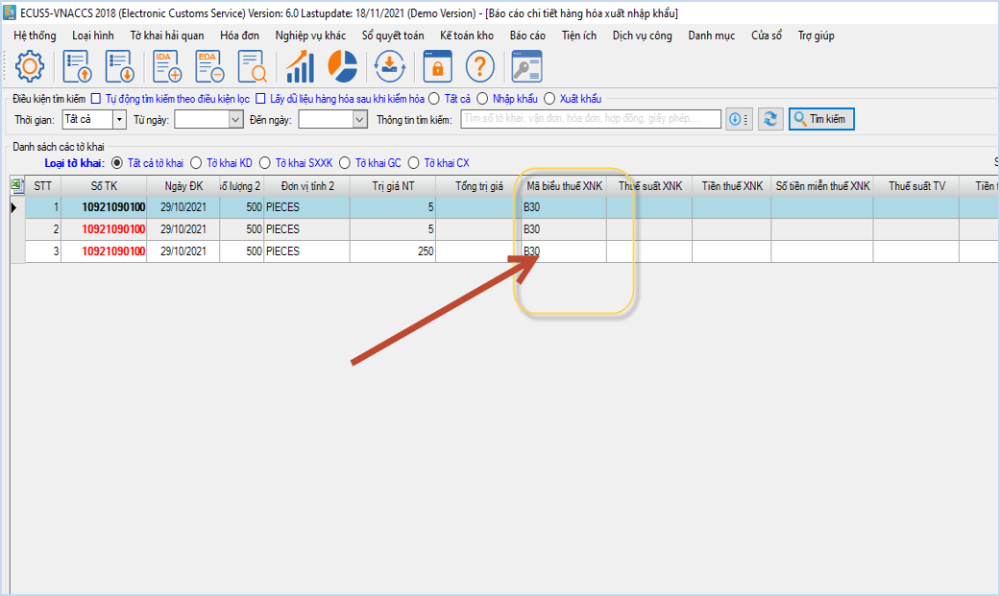
Bản quyền © thuộc về Công ty TNHH Phát triển công nghệ Thái Sơn